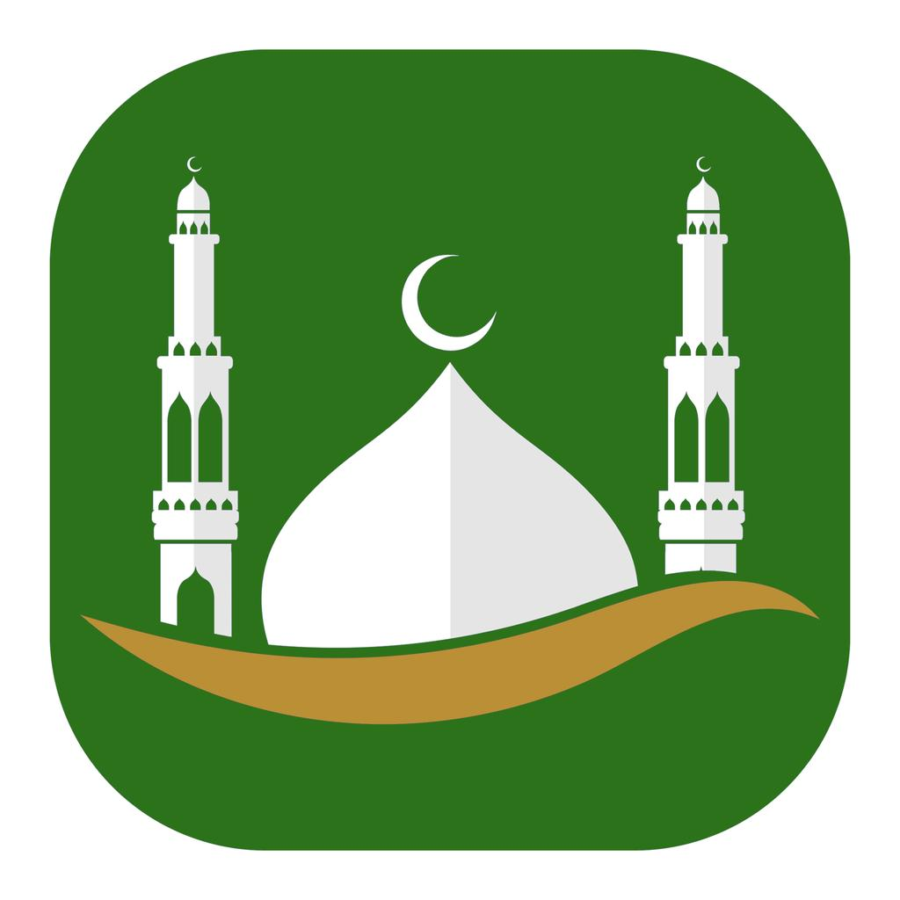

پشتگیری و پەیوەندیکردن · Support & Contact
ئەگەر پرسیار، کێشە یان پێشنیارێکت هەیە دەربارەی ئەپی «بانگی نوێژەکان»، ئیمەیڵمان بۆ بنێرە. هەوڵ دەدەین لە ماوەی ٢–٣ ڕۆژدا وەڵام بدەینەوە.
karimmajid566@gmail.comدەنگی بانگ نایەت؟ دڵنیابە ڕێگەی ئاگادارکردنەوەت داوە، سویچی Silent لە iPhone کوژاوەتەوە، و لە ئەندرۆید Battery لەسەر «No restrictions» ە.
کاتەکان هەڵەن؟ لە ڕێکخستنەکان شارەکەت دووبارە هەڵبژێرە.
For questions, problems or suggestions about the Bang Prayer app, email us. We aim to reply within 2–3 days.
karimmajid566@gmail.comNo adhan sound? Make sure notifications are allowed, the iPhone Silent switch is off, and on Android battery usage is set to “No restrictions”.
Wrong prayer times? Re-select your city in Settings.